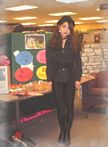
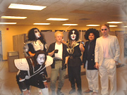
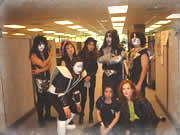
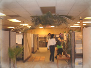
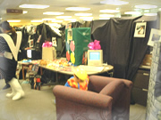
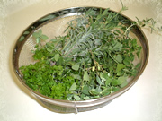
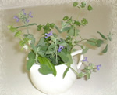

10月の日記(3)
10月の日記(3)

[前の日記] [過去の日記一覧へ] [次の日記]
新しいものは上になります。下
から読んでね(^^)


[前の日記] [過去の日記一覧へ] [次の日記]

[ホーム]

|
2001年10月31日(水) 晴れ 「2001年ハローウィンパーティ」  今年も例年どおり(去年のはここ )、会社でハローウィンパーティがありました。毎年毎年、みんなすごい なぁと思うんだけど、今年もすごかったです(^^; うちの会社で仮装の難しいところは、グループごとにテーマが決まっているこ と。好き勝手なものになれないので悩みます。今年は「1980年代のもの」。投 票で決まって私も一票入れました。 でも、80年代のものってなんだか難しくて、ぜんぜん思い浮かばなかったので、 今年は仮装はやめて見ることに徹底しようかな、と思っていました。が、2日 前に、決まりました。私のメッシュの入った髪形が似ているということで、な んだと思います？．．．これ、一応、ボーイ・ジョージです(^^;。いまいち、 似てないんだけど、帽子かぶって、すごく濃くメークをして．．．． 他の人たちは↓こんな感じ↓です(^^;。すごいね。


会社全体を飾り付けるので、↓こんな感じ↓になります。


でも、4時には終わって、みんなで後片付けして、明日からはまったく通常通 りになります。 2001年10月28日(日) 晴れ 「フルマラソン」 去年も参加したシリコンバレーマラ ソンに行ってきました。去年はリレー だったんだけど、今年はフルマラソンに挑戦してみました。 フルマラソンは10年前に1度、日本で「勝田マラソン」（群馬県）に出たこと があります。あのときはタイムを気にしないで、40キロまで、10キロ1時間の ペースで気持ちよく走れた記憶があります。(ただし最後の2．195 キロは地獄 の思いだったけど(^^;) 今回のフルマラソンに出ようと思い始めたのは6月くらい。それまで週1回3.5 マイル(5.5キロ)走っていたのを週2回に切り替え、今月に入ってからは休日に は13マイル(20キロ)走っていたので感触がつかめた(と思っていました)。 が、今回は地獄の26マイル(42.195キロ)でした。1マイル(1.6キロ)10分くらい のペースで走ろうと思っていたのですが、13マイル(20キロ)までは楽なペース で走っても1マイル(1.6キロ)8〜9分のペースで走れたので「楽勝」な気でいま した。 ところが、15マイルくらいからペースが1マイル12分くらいに落ちてきて、気 にするとペースがくずれるので時計を見るのをやめました．．．18 マイル(30 キロ)くらいから足が重くなってぜんぜん進まなくなってきました。 「あと1時間半このペースで走れば終わる」と思いながら走ったけど、とうと う一歩も進めなくなりました。マラソンのトレーナーだというおじさんが「大 丈夫？」と声をかけてくれたので、「足が前に進まない」と言うと、「(私の 場合)故障じゃなくてエネルギーがなくなってきてる、あそこのサンドイッチ 屋でなにか買って食べるといい、そうすればゴールまで持つと思う」と言って くれました。 大会に出たことがある人ならわかると思うけど、フルマラソンで半分以上すぎ るとそれぞれの給水所には食べ物も置いています。最近では、Gu (グー) とい うスタミナの液体みたいなのがあって、走りながらチューチュー吸うとたちま ち元気がでると言われています。私は給水場でそういったものをもらえると思っ て、ポケットにGuも飴もチョコレートも入れておきませんでした。 確かに給水所にはGuやチョコレートを置いていたらしいんだけど、私がそこを 通り過ぎるときには、もう食べ物はほとんどありませんでした。私は1度もGu を手にすることができませんでした。途中、バナナとチョコレートを1度とる ことができ、食べたらすごく身体が楽になりました。道端で知らない人がクラッ カーを配ってくれていて、私はわしづかみにとってむさぼるように食べながら 走りました。 そのとき、トレーナーのおじさんにそんなことを言われても、お金を持ってい なくて買うことはできず、何の説明もできずに「Thank you」とだけ言いまし た。でも、そんな風にいろんな人が、私を抜かしながら声をかけてくれました。 みんな「あともう少し！」と言ってくれるのが嬉しかったです。 1度、女の人が「Guが欲しい？」と聞くので「欲しい!!」というと、自分のポ ケットを探してくれましたが、「さっきのが最後だった、ごめんなさい」と言っ て抜かしていきました。くぅ．．．(;o;)．．．でも、Guがもらえるかも、と 思った間は不思議と元気がでました。 とにかく、こんなに、息が大丈夫なのに足が進まない、という思いをしたのは 初めてでした。最後の方は食べ物ばかりを探してしまった印象ですが(^^;、こ の苦しさの1番の要因は、普段の練習不足です。考えてみると10年前も週2回し か走りませんでしたが、いつも土日に10キロ走っていて、ときどきハーフや20 キロの大会に出ていたので、走っていた距離は今の倍以上だったと思います。 4時間57分かかっちゃったけど、とにかく完走できました。完走した人全員に、 こんなメダルをもらいました(^^) 2001年10月23日(火) 晴れ 「アップルiPod」 前々から今日（10月23日）何か大きな発表をする、と言っていたアップルが新 製品を発表しました。FireWire採用の携帯MP3音楽プレーヤー「iPod（アイポッ ド）」だそうです。 簡単に言うと、1000曲くらいはいるウォークマン（持ち運びMP3プレーヤー） と思えばいいと思いました。特徴は、アップルにはiTuneというインターネッ ト上の音楽ステーション（でいいのかな？）があるんだけど、ここの曲をすべ てiPodに入れることができるというもの。 私もiBookを買ってからiTuneを利用していますが、曲は豊富で、好きなジャン ルも選べ、使い方も簡単で、なかなかです。そのiTuneと常に同期できるそう です。（iTuneに新しくアップされた曲はiPodに入れることができる） MP3などの音楽は容量が大きいのでコピーするときなど転送に時間がかかりま すが、それはFirewireを使うことで解消されるようです。Firewireはとても早 くて便利です。また、1時間の充電で10時間使えるそうで、その充電も Firewireを通してできるそうです。 歌手名や曲目などが表示は日本語もOKでした。スティーブ・ジョブズのやった デモでは「宇多田ヒカル」の名前も読めましたし、その他日本語の曲目も読め ました。アメリカで発売されたデバイスでは、日本語が文字化けすることが多 いので、これは嬉しかったです。 1000曲も1度に書き込めるのは、5Gのハードディスクだからです。ということ は、普通のファイルでもコピーして持ち運べるのかな。Firewireさえついてい れば、わざわざCDに焼いたりしないでちょっとしたファイルの持ち運びができ るとしたら、他にもいろいろつかえそう。でも、細かいしくみのことは言って いなかったのでよくわかりませんが。 私が1番惹かれたのは「見た目」です。シンプルなトランプ型で、iBookと同じ デザインで、余計な出っ張りや色はついていません。軽くて、操作も簡単そう。 アップルは本当にセンスの光る製品を出すので、399ドル（4万5千円くらい） は、うーんとも思いましたが、でもでもやっぱり興味が．．．11月10日発売だ そうです。 アップルのホームページに載ってい ますので、ぜひ見てみてくださいね。 2001年10月21日(日) 晴れ 「ハーブ」  9月からはじめたハーブ。ハーブの本は 好きでよく読んでいたし、日本にいたころも何度か栽培したのだけど、収穫と か育て方とかはいまいちよくわかっていませんでした。 日本にいたころは育てることだけが目的だったけど、やっぱりはじめたからに は利用したいと思って、先週はハーブに関するページをWebで読んでいました。 花が枯れてしまってもなんとなく摘んでしまうのって気がひけるでしょう？そ れに青々と育っている葉を取るのも．．．でも、元気に育てるためには枯れた 花はとってしまう方がいいそうです。それに草が生い茂ってきたら、すきまを つくって日にあたる空間をつくった方がいいそう。 それで昨日は、たった7種類4つの鉢なんだけど、外に1時間くらいでて、枯れ た部分を摘んだり、思い切って間引きしてみました。そして収穫できたのが右 上の写真。ミント、オレガノ、キャットニップ、ラベンダーの葉、パセリ、ロー ズマリーです。結構たくさんとれますね。 そのうち、花がさいていたバジル(白)、オレガノ(白)、キャットニップ(紫)は、 左下写真のようにいけてみました。右下のパセリはしばらくはコップにさして つかってみたいと思います。 残りは乾燥させて、少しずつ使っていくつもり。ハーブはぐんぐん伸びるので、 これからまだまだ収穫できそうです。植物栽培て始めると楽しくてやめられな いって言うけど、本当ですね。  |
|
新しいものは上になります。下から上に読んでね(^^) |
[前の日記] [過去の日記一覧へ] [次の日記]
[ホーム]